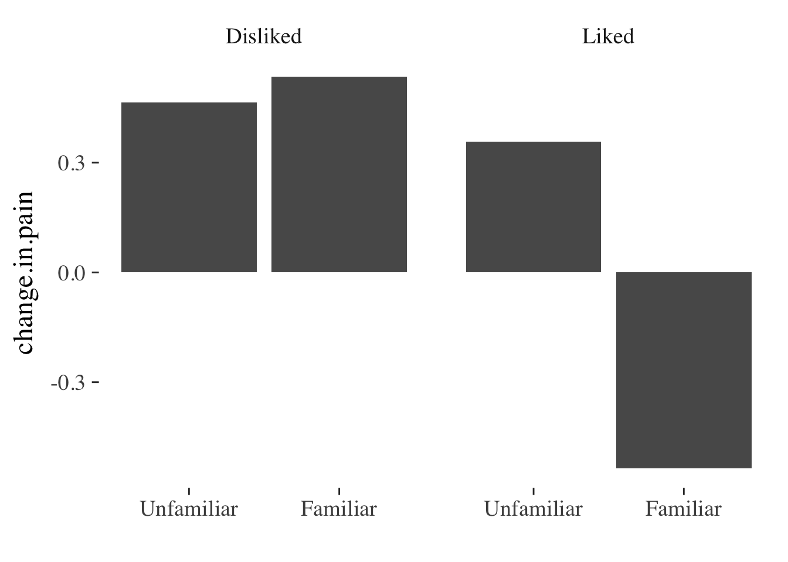
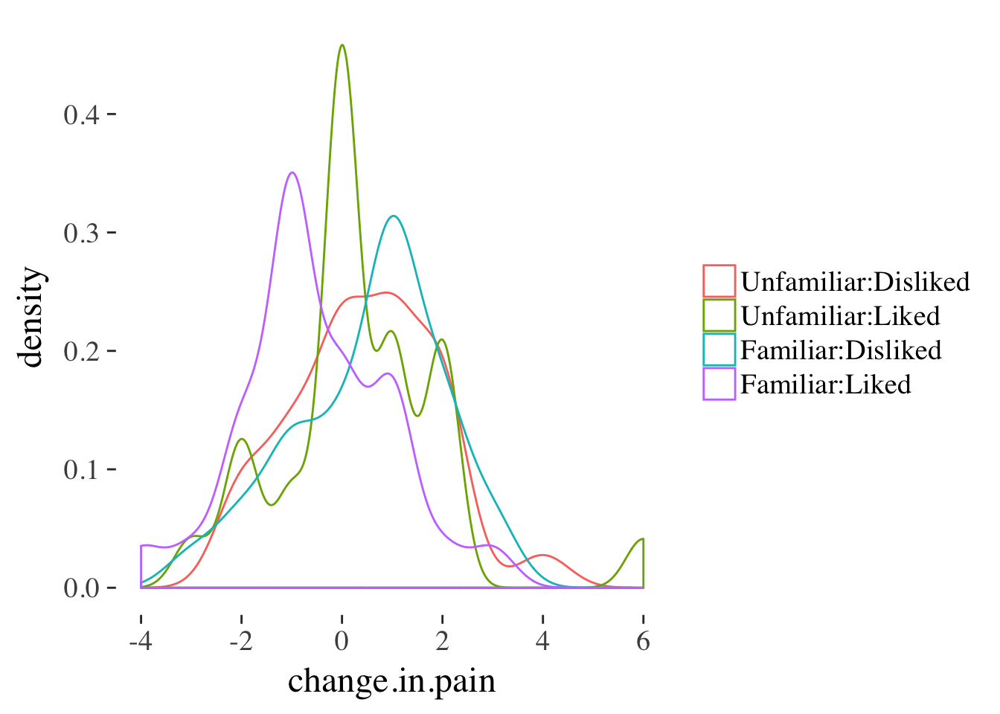
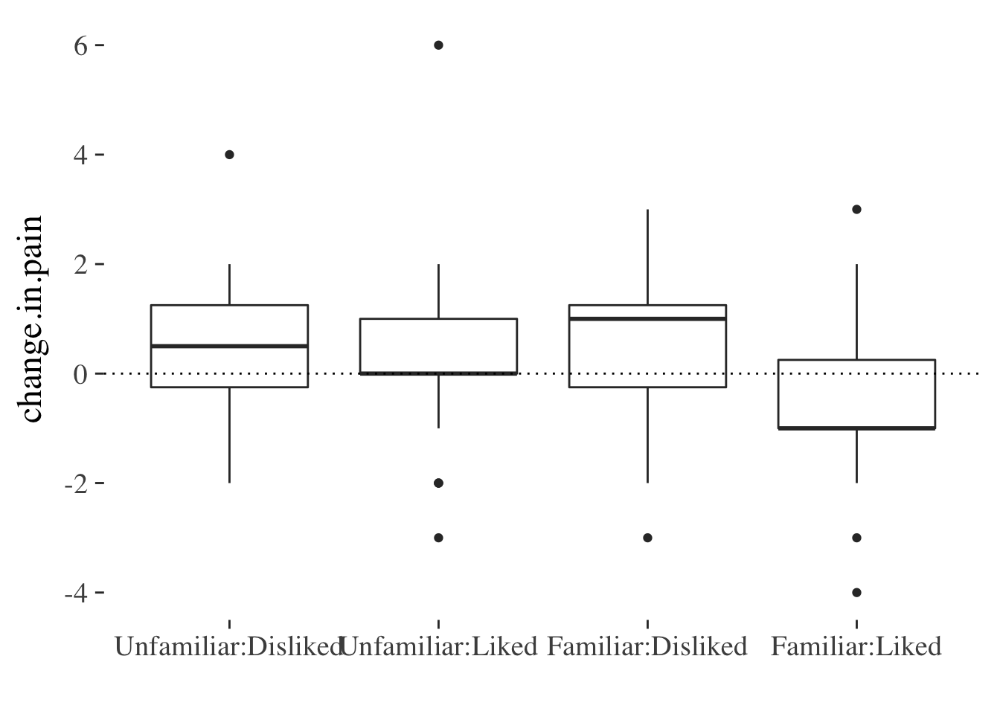

12 Understanding interactions (part 1)
Objectives of this section:
- Clarify/recap what an interaction is
- Appreciate the importance of visualising interactions
- Compare different methods of plotting interactions in raw data
- Deal with cases where predictors are both categorical and continuous (or a mix)
12.1 What is an interaction?
For an interaction to occur we must measure:
- an outcome (severity of injury in a car crash, for example)
- at least 2 predictors of that outcome (e.g. age and gender)
Let’s think of a scenario where we’ve measured severity of injury after road accidents, along with the age and gender of the drivers involved. Let’s assume18:
- Women are likely to be more seriously injured than men in a crash (a +10 point increase in severity)
- Drivers over 60 are more likely to injured than younger drivers (+10 point severity vs <60 years)
For an interaction to occur we have to show that, for example:
- If you ware old and also female then you are more severely injured than we would expect simply by adding the effects for being female (+10 points) and for being over 60 (+10 points). That is, if an interaction occurs the risk of being older and female is > a 20 point increase in severity.
Interactions capture the idea that the effect of one predictor changes across the range of another.
12.1.1 Example interaction visualised
We can see this illustrated in the figure below:
Figure 9.1: Bar plot of injury severity by age and gender.
And this plot might be better re-drawn as a point and line plot:

Figure 12.1: Point and line plot of injury severity by age and gender.
The reason this plot improves on the bar graph is because:
Readers tend to misinterpret bar plots by assuming that values ‘above’ the bar are less likely than values contained ‘within’ the bar, when this is not the case [@newman2012bar].
The main effects are easy to distinguish in the line plot: just ask yourself if the lines are horizontal or not, and whether they are separated vertically. In contrast, reading the interction from the bar graph requires that we average pairs of bars (sometimes not adjacent to one another) and compare them - a much more difficult mental operation.
The interaction is easy to spot: Ask yourself if the lines are parallel. If they are parallel then the difference between men and women is constant for individuals of different ages.
12.2 Visualising interactions in raw data
Before setting out to test for an interaction using some kind of statistical model, it’s a good idea to first visualise the relationships between outcomes and predictors.
A student dissertation project investigated the analgesic quality of music during an experimental pain stimulus. Music was selected to be either liked (or disliked) by participants and was either familiar or unfamiliar to them. Pain was rated without music (no.music) and with music (with.music) using a 10cm visual analog scale anchored with the labels “no pain” and “worst pain ever”.
Before modelling the outcome, it would be helpful to see if the data are congruent with the study prediction that liked and familiar music would be more effective than disliked or unfamiliar music
We can do this in many different ways. The most common would be a simple bar plot, which we can create using the stat_summary() function from ggplot2.
painmusic %>%
mutate(change.in.pain = with.music - no.music) %>%
ggplot(aes(x = familiar, y=change.in.pain)) +
facet_wrap(~liked) +
stat_summary(geom="bar") + xlab("")
This gives a pretty clear indication that something is going on, but we have no idea about the distriburion of the underlying data, and so how much confidence to place in the finding.
If we want to preserve more information about the underlying distribution we can use density plots, boxplots, or pointrange plots, among others.
Here we use a grouped19 density plot:
painmusic %>%
mutate(change.in.pain = with.music - no.music) %>%
ggplot(aes(x = change.in.pain,
color = interaction(familiar:liked))) +
geom_density() +
scale_color_discrete(name="")
And here we use a boxplot to achieve similar ends:
painmusic %>%
mutate(change.in.pain = with.music - no.music) %>%
ggplot(aes(x = interaction(familiar:liked), y = change.in.pain)) +
geom_boxplot() +
geom_hline(yintercept = 0, linetype="dotted") +
xlab("")
The advantage of both these plots is that they preserve quite a bit of infrmation about the variable of interest. However, they don’t make it easy to read the main effects and interaction as we saw for the point-line plot above.
We can combine some benefits of both plots by adding an error bar to the point-line plot:
painmusic %>%
ggplot(aes(liked, with.music - no.music,
group=familiar, color=familiar)) +
stat_summary(geom="pointrange", fun.data=mean_se) +
stat_summary(geom="line", fun.data=mean_se) +
ylab("Pain (VAS) with.music - no.music") +
scale_color_discrete(name="") +
xlab("") 
This plot doesn’t include all of the information about the distribution of effects that the density or boxplots do (for example, we can’t see any asymmetry in the distributions any more), but we still get some information about the variability of the effect of the experimental conditions on pain by plotting the SE of the mean over the top of each point20
At this point, especially if your current data include only categorical predictors, you might want to move on to the section on making predictions from models and visualising these.
12.3 Continuous predictors
…
12.4 What next?
You might like to move on to making predictions from statistical models, and plotting these.